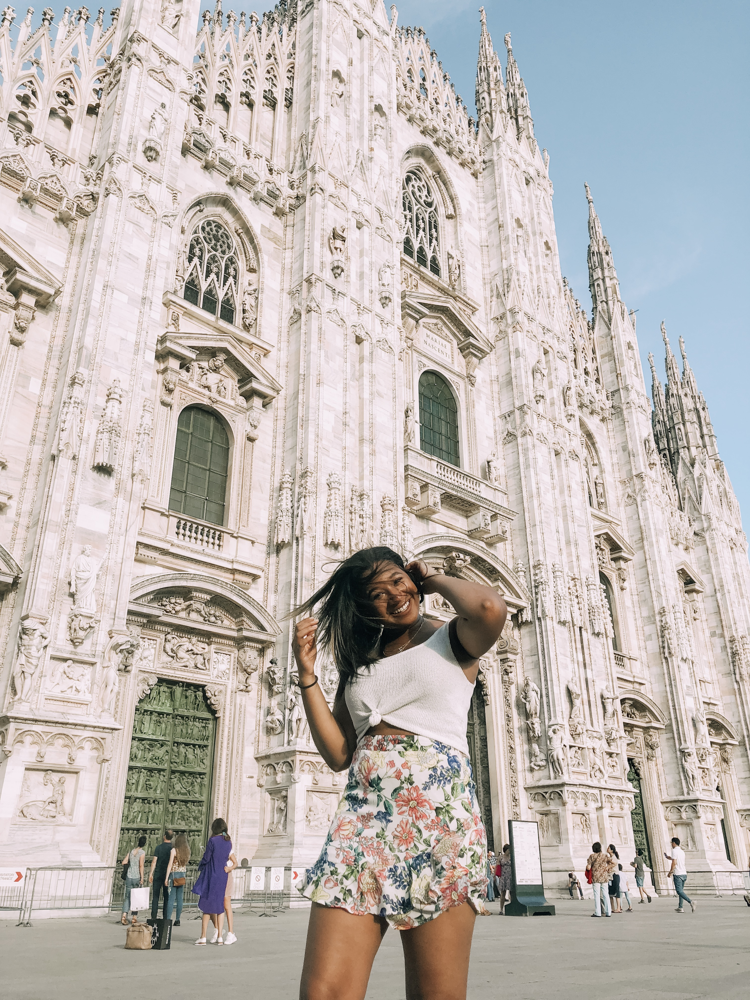

My Time Abroad in Europe |
|
AMSTERDAM
Last semester I studied abroad at Oxford University in England. One place I went while studying abroad was Amsterdam. Amsterdam was so much fun! It’s the city known for biking, and there were parking lots full of bikes! I’ve never seen so many bikes in my life. My favorite place I went while in Amsterdam was the ‘Ice Bar’, which is a bar made completely of ice. We also went to the Van Gogh museum, Heineken museum, and more! PARISParis was another beautiful city I visited while in Europe. I took a £30 overnight bus and got from the UK to Paris in only 9 hours. The bus went through the English channel via an underwater tunnel! While in Paris I saw the Eiffel Tower and went to the very top of it. I also went to the Louvre Museum and saw the Mona Lisa painting. We had a picnic outside of the Eiffel Tower for lunch. We took many pictures and had a lot of fun! The food in Paris is amazing, especially all the bakeries. I had the best cookies and muffins while I was there. I also had an amazing crepe for the first time. I loved my time in Paris and look forward to going back. PRAGUEOne of my favorite places I visited was Prague. This trip was so much fun because I got to hang out with my parents in another country. My dad works with his team in Prague every year, so we arranged to meet up and spend the weekend together. We went shopping, ate good food, and toured the beautiful town. Out of all the places I visited, Prague was the most historical and beautiful. The architecture was so old. One day we got a foot massage by fish! We put our legs in a fish tank and the fish “massaged” our feet by eating the dead skin. The shopping in Prague is amazing, my mom and I had a great time in the mall. Prague has a signature dessert called “Trdelník”, which is made from rolled dough that is wrapped around a stick and filled with vanilla ice cream. Its huge and delicious! I can’t wait to go back to Prague some day.
To see more about my trip to Europe, check out a Video I made while I was in London!
Click Here or watch below
Travel is the only thing you buy that makes you richer. |